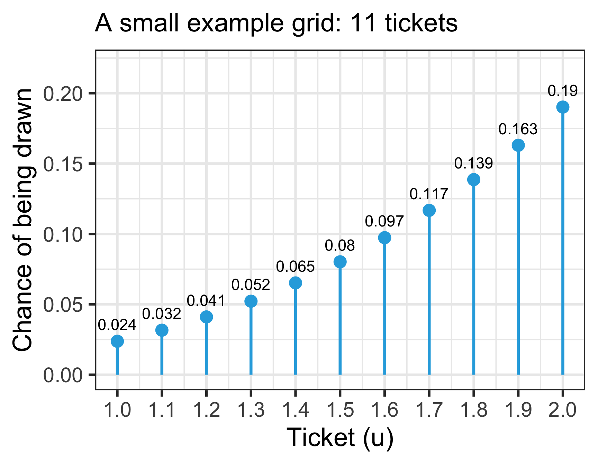
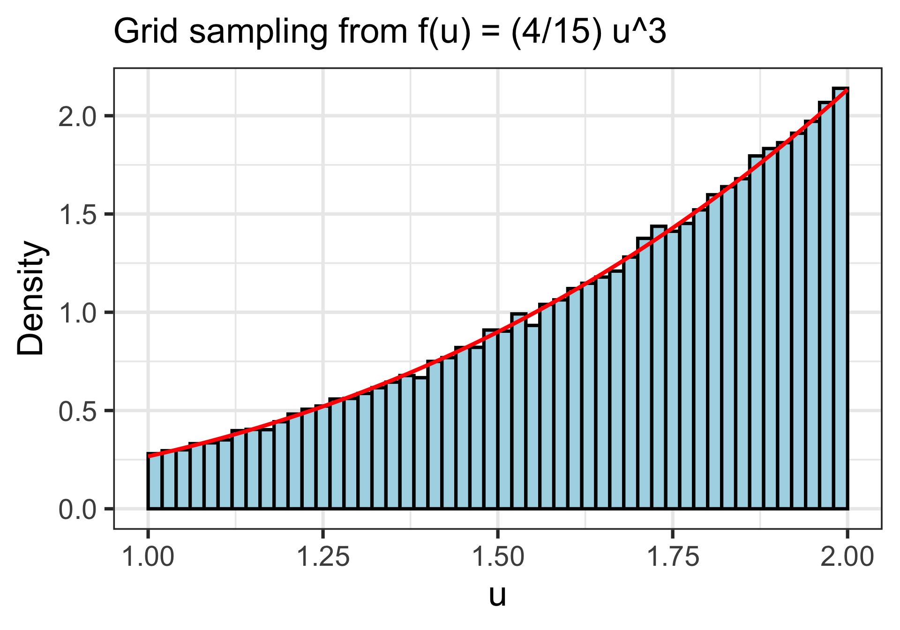
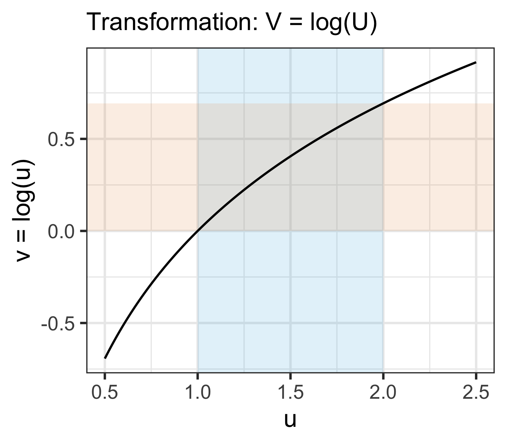
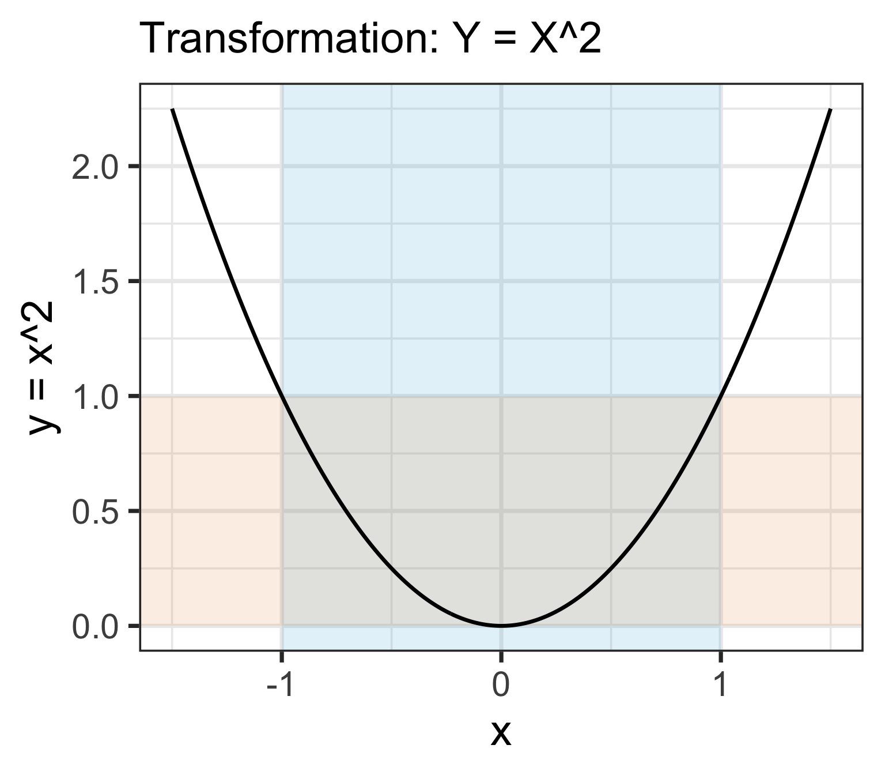
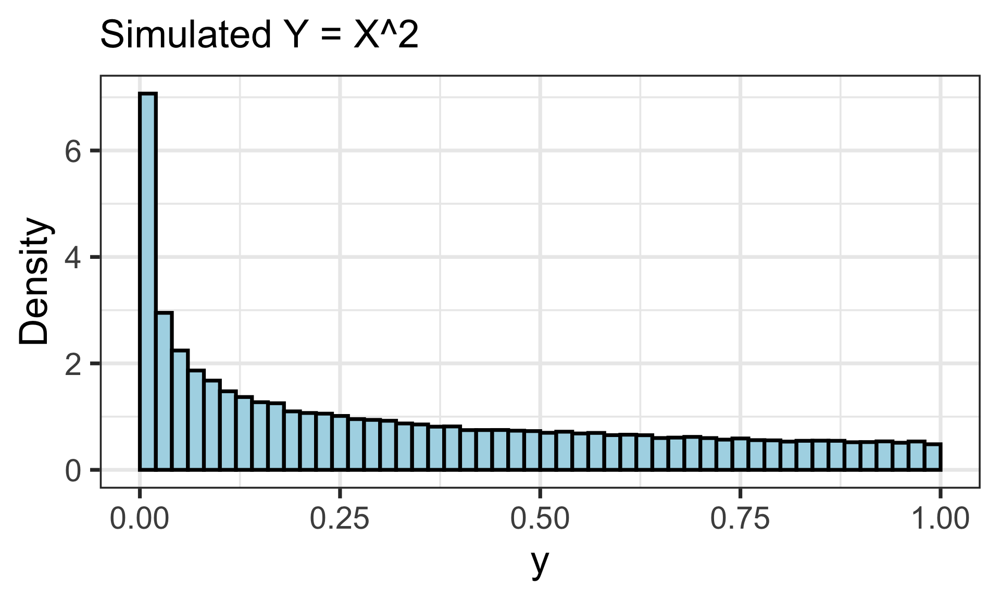
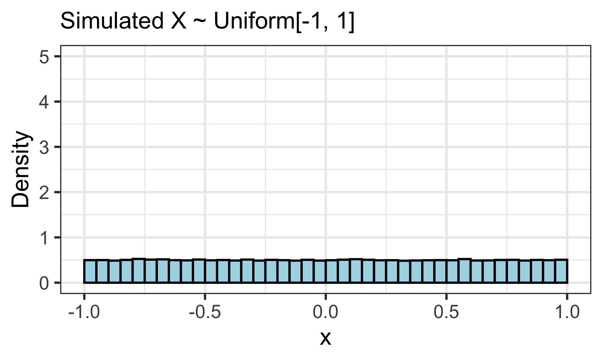
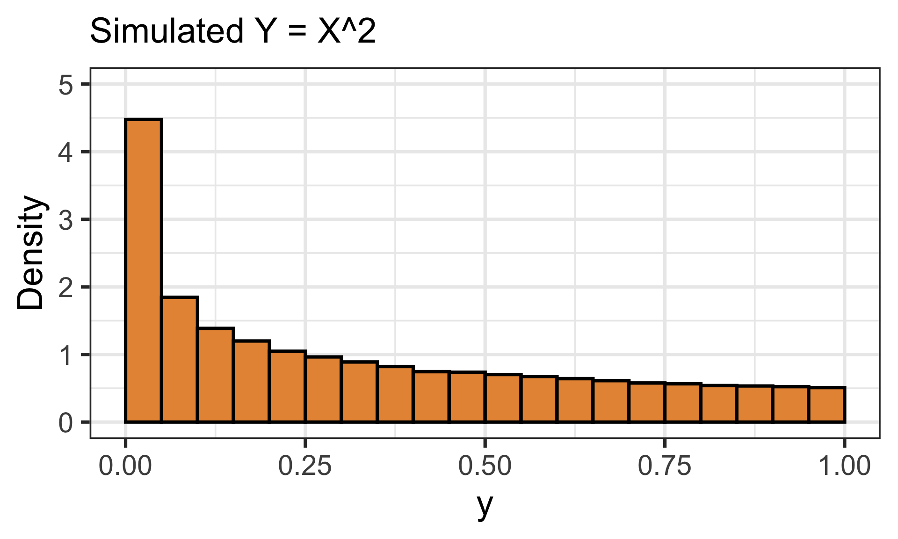
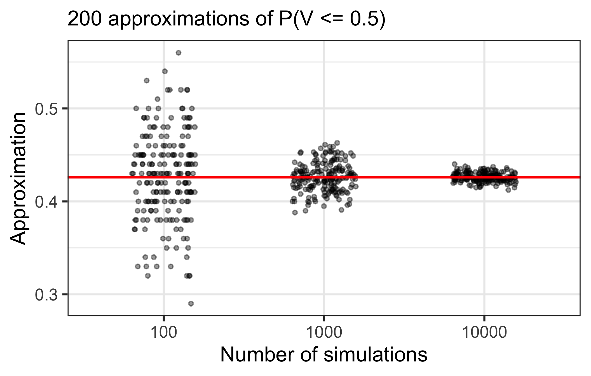
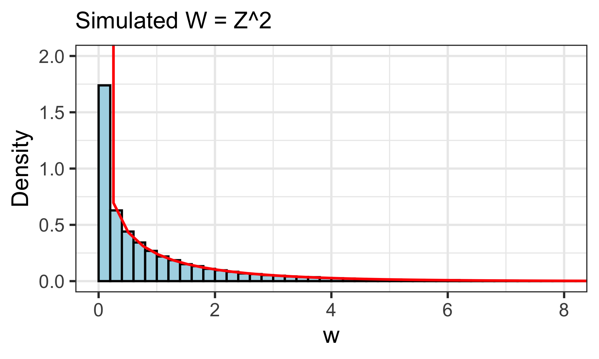

Lesson 14: Transformations
Learning Objectives
- Use the simulation method (simulate, transform, summarize) to transform a random variable
- Use simulation to approximate probabilities and the shape of the distribution of a linear transformation
- Use simulation to approximate probabilities and the shape of the distribution of a nonlinear transformation
Distributions of transformations of random variables
- Often make transformations of RVs
- Unit conversions (Celsius to Fahrenheit, minutes to hours)
- Log-transforming a skewed biomarker
- Turning a waiting time into a rate
- A function of a random variable is a random variable
- If \(X\) is a random variable and \(g\) is a function then \(Y=g(X)\) is a random variable
- Since \(g(X)\) is a random variable it has a distribution
- Two types:
- Linear rescalings: \(g(u) = a + bu\)
- Nonlinear transformations: e.g. \(g(u) = u^2\), \(g(u) = \log(u)\)
- Our main tool today: simulate \(X\), transform every simulated value, then summarize
Learning Objectives
- Use the simulation method (simulate, transform, summarize) to transform a random variable
- Use simulation to approximate probabilities and the shape of the distribution of a linear transformation
- Use simulation to approximate probabilities and the shape of the distribution of a nonlinear transformation
Our main tool: simulate, transform, summarize
The simulation method for transformations
To learn about the distribution of \(Y = g(X)\):
- Possible values: Find the possible values of \(Y\) (graph \(g\) over the possible values of \(X\))
- Simulate: Simulate many values of \(X\)
- Transform: Apply \(g\) to every simulated value:
mutate(y = g(x)) - Summarize:
- Probabilities:
mean(y <= c)approximates \(P(Y \leq c)\) - Shape: a histogram of
y - Center and spread:
mean(y),sd(y)
- Probabilities:
- This works for any function \(g\), as long as we can simulate \(X\)
- We do not need the CDF of \(X\), the CDF of \(Y\), or a
p*()function for \(Y\)
For step 1: possible values and rewriting events
- For linear and nonlinear transformations, rewriting an event about \(Y = g(X)\) as an event about \(X\) helps us:
- Find the possible values of \(Y\) (Step 1 in our main tool)
- Check that our simulation summary is counting the right thing (Step 4)
- Find an exact answer when we can find probabilities for \(X\) (a
p*()function or a rectangle’s area)
- Examples:
| \(Y=g(X)\) | Event about \(Y\) | Same event about \(X\) |
|---|---|---|
| \(Y = 1 - X\) (linear) | \(Y \leq -0.5\) | \(X \geq 1.5\) (multiplying by \(-1\) flips the inequality!) |
| \(Y = \log(X)\) (nonlinear) | \(Y \leq 0.5\) | \(X \leq e^{0.5}\) |
| \(Y = X^2\) (nonlinear) | \(Y \leq 0.25\) | \(-0.5 \leq X \leq 0.5\) (two sides!) |
| \(Y = \dfrac{1}{X}\) (nonlinear) | \(Y > 2\) | \(0 < X < 0.5\) (the inequality flips, and \(X\) must be positive!) |
- Graph \(g\) to see which values of \(X\) land in the event
For step 2 simulation: four ways
How do we get simulated values of \(X\) in step 2?
- Named distribution: use its
r*()function from Lessons 12 and 13 (runif(),rexp(),rgamma(),rnorm())
- Build it from simpler pieces: like the Gamma as a sum of exponentials (Lesson 13)
- Have the CDF? Use the inverse CDF method from Lesson 9
- Plug Uniform(0, 1) values into \(F_X^{-1}\)
- Needs a CDF we can write down and solve for \(x\)
- Only have the pdf? Use grid sampling (next slide)
- Only needs the height of the pdf: no CDF required
Grid sampling: the steps
- Let \(U\) have pdf \(f_U(u)= \dfrac{4}{15}u^3\) for \(1\leq u \leq 2\). There is no
r*()function for \(U\)! - Idea: a box model (Lesson 2), where tickets in taller parts of the pdf are more likely to be drawn
Find the possible values of \(U\): from 1 to 2
Make a grid: many evenly spaced values across the possible values. Each value is a ticket in the box
- e.g. 1, 1.0001, 1.0002, …, 2 (10,001 tickets)
Find the pdf’s height at each ticket: \(f_U(1) \approx 0.27\), …, \(f_U(2) \approx 2.13\)
Draw many tickets with replacement. Each draw is one simulated value of \(U\)
- Each ticket has a chance of being drawn proportional to its height
Check: a histogram of the draws should follow the pdf
Real grid has 10,001 tickets, so draws look continuous
Grid sampling: code and plot
- Simulate 100,000 values of \(U\), with \(f_U(u)= \dfrac{4}{15}u^3\) for \(1\leq u \leq 2\), by grid sampling
- 1
- Set the random seed once, so we get the same simulation every time.
- 2
-
Save the number of simulations as
reps, so it is easy to change later. - 3
- Steps 1 and 2: the “tickets” are 10,001 evenly spaced values from 1 to 2 (1, 1.0001, 1.0002, …, 2).
- 4
- One row per simulation.
- 5
-
Step 5:
sample()draws one ticket for every row, with replacement, like in Lesson 2. - 6
-
Steps 3 and 4:
probgives each ticket the pdf’s height there, so taller tickets are more likely to be drawn. R rescalesprobto add to 1, soprob = u_grid^3gives the same draws: the constant \(\frac{4}{15}\) is not even needed!
Plot code
7ggplot(u_sims, aes(x = u)) +
geom_histogram(aes(y = after_stat(density)),
binwidth = 0.02, boundary = 1,
color = "black", fill = "lightblue") +
8 geom_function(fun = function(u) 4/15 * u^3,
color = "red", linewidth = 1.5) +
9 labs(subtitle = "Grid sampling from f(u) = (4/15) u^3",
x = "u", y = "Density")- 7
- Histogram of the simulated values of \(U\), scaled like a pdf (Lesson 8).
- 8
- Step 6: the pdf \(f_U(u)\) in red. The histogram follows it.
- 9
- Add a subtitle and axis labels.

The larger we make reps and length.out, the closer we get to the exact pdf.
Learning Objectives
- Use the simulation method (simulate, transform, summarize) to transform a random variable
- Use simulation to approximate probabilities and the shape of the distribution of a linear transformation
- Use simulation to approximate probabilities and the shape of the distribution of a nonlinear transformation
Linear rescaling
Definition: Linear Rescaling
A linear rescaling is a transformation of the form \(g(u) = a + bu\), where \(a\) and \(b\) are constants
Thus, if we have a random variable, \(X\), then a linear rescaling of \(X\) could be \(M = g(X) = a + bX\)
For example, converting temperature from Celsius to Fahrenheit using \(g(u) = 32 + 1.8u\) is a linear rescaling.
Example 1: Linear rescaling of \(U\)
Let \(U\) be a random variable with \(f_U(u)= \dfrac{4}{15}u^3\) for \(1\leq u \leq 2\). Define \(V=1-U\)
- What are the possible values of \(V\)?
- Is \(V\) the same random variable as \(U\)?
- Rewrite the event \(V \le -0.5\) in terms of \(U\). Then approximate \(P(V \le -0.5)\) with simulation.
Example 1: Linear rescaling of \(U\)
Let \(U\) be a random variable with \(f_U(u)= \dfrac{4}{15}u^3\) for \(1\leq u \leq 2\). Define \(V=1-U\)
- What are the possible values of \(V\)?
- Is \(V\) the same random variable as \(U\)?
Example 1: Linear rescaling of \(U\)
Let \(U\) be a random variable with \(f_U(u)= \dfrac{4}{15}u^3\) for \(1\leq u \leq 2\). Define \(V=1-U\)
- Rewrite the event \(V \le -0.5\) in terms of \(U\). Then approximate \(P(V \le -0.5)\) with simulation.
- Rewrite the event \(V \le -0.5\) in terms of \(U\). Then approximate \(P(V \le -0.5)\) with simulation.
- 1
- Reuse the 100,000 grid-sampled values of \(U\).
- 2
-
The linear rescaling: each simulated
ubecomesv = 1 - u. - 3
- One row of summaries of the 100,000 simulations.
- 4
- The proportion of simulations with \(V \leq -0.5\) approximates \(P(V \leq -0.5)\).
- 5
- Same answer: \(V \leq -0.5\) is the same event as \(U \geq 1.5\).
# A tibble: 1 × 2
prob_V prob_U
<dbl> <dbl>
1 0.731 0.731For reference, the exact answer is \(P(V \leq -0.5) \approx 0.7292\)
Plot code
6ggplot(u_sims) +
7 geom_histogram(aes(x = u, y = after_stat(density)),
binwidth = 0.05, boundary = 1,
color = "black", fill = "lightblue") +
8 geom_histogram(aes(x = v, y = after_stat(density)),
binwidth = 0.05, boundary = -1,
color = "black", fill = "#E89543") +
9 labs(subtitle = "Simulated U (blue) and V = 1 - U (orange)",
x = "Value", y = "Density")- 6
- Start a plot of the simulations. Each histogram below picks its own column.
- 7
-
Histogram of the simulated
uvalues, scaled like a pdf. - 8
-
Histogram of the simulated
vvalues, on the same axes. - 9
- Add a subtitle and axis labels.

What happens to the distribution?
- \(V = 1 - U\) flips \(U\) around: same shape, mirrored
- In general, linear rescaling can shift (add \(a\)), stretch or condense (multiply by \(|b|\)), and flip (\(b < 0\)) a distribution
- Stretching the values out by \(|b|\) makes the histogram \(|b|\) times wider…
- …so it must get \(|b|\) times shorter to keep the total area equal to 1
- We say this is a preservation of shape: only scaled
- Center and spread change the way we saw in Lessons 10 and 11:
- \(\mathbb{E}[a + bX] = a + b\,\mathbb{E}[X]\)
- \(Var(a + bX) = b^2\, Var(X)\) and \(SD(a + bX) = |b|\, SD(X)\)
Linear rescaling of named distributions
For most named distributions, a linear rescaling stays in the same family, with new parameters:
| If \(X \sim\) | then | is |
|---|---|---|
| \(\text{Normal}(\mu, \sigma^2)\) | \(a + bX\) | \(\text{Normal}(a + b\mu,\ b^2\sigma^2)\) |
| \(\text{Uniform}[l, r]\) | \(a + bX\) (with \(b > 0\)) | \(\text{Uniform}[a + bl,\ a + br]\) |
| \(\text{Exponential}(\lambda)\) | \(cX\) (with \(c > 0\)) | \(\text{Exponential}(\lambda / c)\) |
| \(\text{Gamma}(r, \lambda)\) | \(cX\) (with \(c > 0\)) | \(\text{Gamma}(r,\ \lambda / c)\) |
Exponential and Gamma: only multiply, do not shift! \(X + 3\) can’t be close to 0, so it is not Exponential
Standardizing is a linear rescaling: if \(X \sim \text{Normal}(\mu, \sigma^2)\), then
\[Z = \dfrac{X - \mu}{\sigma} \sim \text{Normal}(0, 1)\]
Linear rescaling: final words
- Remember, do NOT confuse a random variable with its distribution
- The random variable is the numerical quantity being measured
- The distribution is the long run pattern of variation of many observed values of the random variable
- Ultimately, a transformed random variable does NOT have the same distribution - possible values change
Learning Objectives
- Use the simulation method (simulate, transform, summarize) to transform a random variable
- Use simulation to approximate probabilities and the shape of the distribution of a linear transformation
- Use simulation to approximate probabilities and the shape of the distribution of a nonlinear transformation
Nonlinear transformations
- What happens when we make a nonlinear transformation, like a logarithmic or square root transformation?
- Nonlinear transformations do not necessarily preserve the distribution shape
- Examples of nonlinear transformations:
- \(g(u) = u^2\)
- \(g(u) = \sqrt{u}\)
- \(g(u) = \log(u)\)
- \(g(u) = e^u\)
- \(g(u) = \dfrac{1}{u}\)
Example 2: Log transformation of \(U\)
Let \(U\) be a random variable with \(f_U(u)= \dfrac{4}{15}u^3\) for \(1\leq u \leq 2\). Define \(V=\log(U)\)
- What are the possible values of \(V\)?
- Rewrite the event \(V \leq 0.5\) in terms of \(U\).
- Approximate \(P(V \leq 0.5)\) with simulation.
Example 2: Log transformation of \(U\)
Let \(U\) be a random variable with \(f_U(u)= \dfrac{4}{15}u^3\) for \(1\leq u \leq 2\). Define \(V=\log(U)\)
- What are the possible values of \(V\)?

Example 2: Log transformation of \(U\)
Let \(U\) be a random variable with \(f_U(u)= \dfrac{4}{15}u^3\) for \(1\leq u \leq 2\). Define \(V=\log(U)\)
- Rewrite the event \(V \leq 0.5\) in terms of \(U\).
- Approximate \(P(V \leq 0.5)\) with simulation.
- 1
- Reuse the 100,000 grid-sampled values of \(U\) from Example 1.
- 2
-
The nonlinear transformation: \(V = \log(U)\). We name the column
log_uso it does not replacev\(= 1 - U\) from Example 1. - 3
- One row of summaries.
- 4
- The proportion of simulations with \(\log(U) \leq 0.5\) approximates \(P(V \leq 0.5)\).
- 5
-
Same answer: \(\log(U) \leq 0.5\) is the same event as \(U \leq e^{0.5}\).
exp()is \(e\) to a power.
# A tibble: 1 × 2
prob_V prob_U
<dbl> <dbl>
1 0.423 0.423For reference, the exact answer is \(P(V \leq 0.5) \approx 0.4260\)
Plot code
6ggplot(u_sims, aes(x = log_u)) +
geom_histogram(aes(y = after_stat(density)),
binwidth = log(2) / 30, boundary = 0,
color = "black", fill = "lightblue") +
7 geom_function(fun = function(v) 4/15 * exp(4 * v),
xlim = c(0, log(2)),
color = "red", linewidth = 1.5) +
8 labs(subtitle = "Simulated V = log(U)",
x = "v", y = "Density")- 6
- Histogram of the simulated values of \(V = \log(U)\), scaled like a pdf, with 30 bars between 0 and \(\log(2)\).
- 7
- For reference, the pdf of \(V\) in red: \(f_V(v) = \frac{4}{15}e^{4v}\) for \(0 \leq v \leq \log(2)\) (finding it takes calculus). The histogram follows it.
- 8
- Add a subtitle and axis labels.

Example 3: Squaring a Uniform RV
Let \(X \sim \text{Uniform}[-1, 1]\), so \(f_X(x)= \dfrac{1}{2}\) for \(-1\leq x \leq 1\). Define \(Y=X^2\)
- What are the possible values of \(Y\)?
- Rewrite the event \(Y \leq 0.25\) in terms of \(X\).
- Find \(P(Y \leq 0.25)\) exactly using the distribution of \(X\). Check it with simulation.
Example 3: Squaring a Uniform RV
Let \(X \sim \text{Uniform}[-1, 1]\), so \(f_X(x)= \dfrac{1}{2}\) for \(-1\leq x \leq 1\). Define \(Y=X^2\)
- What are the possible values of \(Y\)?

Example 3: Squaring a Uniform RV
Let \(X \sim \text{Uniform}[-1, 1]\), so \(f_X(x)= \dfrac{1}{2}\) for \(-1\leq x \leq 1\). Define \(Y=X^2\)
- Rewrite the event \(Y \leq 0.25\) in terms of \(X\).
- Find \(P(Y \leq 0.25)\) exactly using the distribution of \(X\).
- Check \(P(Y \leq 0.25)\) with simulation.
- 1
- One row per simulation.
- 2
-
\(X \sim \text{Uniform}[-1, 1]\) has a named distribution, so we simulate it with
runif(). - 3
-
The nonlinear transformation: square each simulated
x. - 4
- The proportion of simulations with \(Y \leq 0.25\) approximates \(P(Y \leq 0.25)\).
- 5
- Exact: \(P(-0.5 \leq X \leq 0.5)\), a rectangle with width 1 and height \(\frac{1}{2}\).
# A tibble: 1 × 1
prob_Y
<dbl>
1 0.498
[1] 0.5Plot code
- 6
- Histogram of the simulated values of \(Y\), scaled like a pdf.
- 7
- Add a subtitle and axis labels.

How does the distribution of \(Y = X^2\) compare to the distribution of \(X\)?
Plot code
- 1
- Histogram of the simulated values of \(X\), scaled like a pdf.
- 2
- Use the same y-axis for both plots, so we can compare heights.
- 3
- Add a subtitle and axis labels.

- \(X\) is flat: every part of \([-1, 1]\) is equally likely
Plot code
- 1
- Histogram of the simulated values of \(Y\), from the same simulations as \(X\).
- 2
- Same y-axis as the plot of \(X\).
- 3
- Add a subtitle and axis labels.

- \(Y = X^2\) piles up near 0: the shape changed!
- Half of the values of \(X\) (from \(-0.5\) to \(0.5\)) get squeezed into \([0, 0.25]\)
How accurate is a simulation? (1/2)
- A single simulation gives an approximation. Run it again with a new seed and the answer moves a little
- How much it moves depends on the number of simulations
- Let’s repeat the simulation from Example 2 200 times for each of 100, 1,000, and 10,000 simulations
Measure average estimate and spread
- 1
- Summarize the 200 approximations for each simulation size.
- 2
- On average, every size is close to the exact answer, 0.4260.
- 3
- The SD of the 200 approximations: how much one simulation’s answer moves around.
# A tibble: 3 × 3
n_sims avg_estimate spread
<dbl> <dbl> <dbl>
1 100 0.428 0.0480
2 1000 0.426 0.0157
3 10000 0.426 0.00491
- 100 times more simulations makes the spread about 10 times smaller
- We will see this again with the Central Limit Theorem
Plot code
- 4
- One column of points for each simulation size.
- 5
-
Each point is one run’s approximation.
geom_jitter()spreads the points sideways so they don’t overlap. - 6
- The exact answer in red.
- 7
- Add a subtitle and axis labels.

Learning Objectives
- Use the simulation method (simulate, transform, summarize) to transform a random variable
- Use simulation to approximate probabilities and the shape of the distribution of a linear transformation
- Use simulation to approximate probabilities and the shape of the distribution of a nonlinear transformation
Summary of transformations
Summary of changes for linear and nonlinear transformations:
| Linear rescaling | Nonlinear transformation | |
|---|---|---|
| Changes the distribution? | Yes | Yes |
| Changes the “shape”? | No | Usually |
| How to find probabilities | Same family with new parameters, or rewrite the event in terms of \(X\) | Simulate, transform, summarize; rewrite the event in terms of \(X\) to check |
- The simulation method works for any transformation: simulate \(X\), transform, summarize
- Rewrite events about \(Y\) in terms of \(X\) to find possible values, check your simulation, and get exact answers when you can
Some more reference slides
Example 4: \(Z^2\) and the chi-squared distribution
Let \(Z \sim \text{Normal}(0, 1)\) and \(W = Z^2\).
- What are the possible values of \(W\)?
- Rewrite \(W \leq 4\) in terms of \(Z\), and find \(P(W \leq 4)\) with
pnorm(). - In Lesson 13, we said \(Z^2 \sim \chi^2_{(1)}\). Check with
pchisq()and with simulation.
Example 4: \(Z^2\) and the chi-squared distribution
Let \(Z \sim \text{Normal}(0, 1)\) and \(W = Z^2\).
- What are the possible values of \(W\)?
- Rewrite \(W \leq 4\) in terms of \(Z\), and find \(P(W \leq 4)\) with
pnorm().
- In Lesson 13, we said \(Z^2 \sim \chi^2_{(1)}\). Check with
pchisq()and with simulation.
- 1
-
Simulate the standard Normal \(Z\) with
rnorm(). - 2
- The nonlinear transformation: \(W = Z^2\).
- 3
- Approximates \(P(W \leq 4)\).
- 4
- \(Z^2 \leq 4\) is the same event as \(-2 \leq Z \leq 2\) (two sides, like Example 3).
- 5
- The chi-squared distribution with 1 degree of freedom gives the same answer.
# A tibble: 1 × 1
prob_W
<dbl>
1 0.954
[1] 0.9544997
[1] 0.9544997Plot code
6ggplot(z_sims, aes(x = w)) +
geom_histogram(aes(y = after_stat(density)),
binwidth = 0.2, boundary = 0,
color = "black", fill = "lightblue") +
7 geom_function(fun = function(w) dchisq(w, df = 1),
color = "red", linewidth = 1.5) +
8 coord_cartesian(xlim = c(0, 8), ylim = c(0, 2)) +
9 labs(subtitle = "Simulated W = Z^2", x = "w", y = "Density")- 6
- Histogram of the simulated values of \(W\), scaled like a pdf.
- 7
-
The \(\chi^2_{(1)}\) pdf from
dchisq(), in red. - 8
- Zoom in, because the pdf shoots up near 0 and has a long right tail.
- 9
- Add a subtitle and axis labels.
